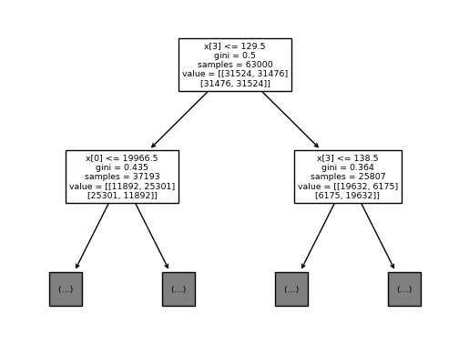

The goal of this project is to develop a classification model to detect heart disease.
https://www.kaggle.com/datasets/sulianova/cardiovascular-disease-dataset
Jupyter Notebook (Code): https://github.com/kinglouisph/datamining2
The data used for this project is a database of 70000 people
The features of this database I am using are:
Age, Height, Weight, Gender, Systolic blood pressure, Diastolic blood pressure, Cholesterol, Glucose, Smoking, Alcohol intake, Physical activity, and Presence of cardiovascular disease.
There is 70000 rows in this dataset, no nulls. There is an approximately even split of positives and negatives. It seems explicitely designed to train classification models off of, which is exactly what I'm doing.
The first thing I realized is the weird format of the data. It was just one row, with semicolon separation between the fields. Very weird (It wasn't like that on kaggle), but easily fixable.
Next I added one-hot encoding, to make the data easier to process for the models. I also added a bias row of just ones. This was probably unnecessary, but I was being safe, just incase any of the models I tried didn't use any bias by default (I'm fairly certain they all did, mostly I was just worried about TensorFlow and linear regression, even though I almost certainly shouldn't have been).
My first idea for a model to classify these was to use a neural network. I used the the library TensorFlow for this. I tried 4 models, with mixed results, but overall success. Where not otherwise stated, I used RELU for hidden layers and sigmoid for outputs as activation functions.
This model was pretty simple, a hidden layer of 100 neurons. My expectation was that the large number of neurons would be able to pick out lots of patterns of features. I got very mixed results. Sometimes the accuracy was as high as .7, but about hald the time it was just ~.5. The most recent run was .5 so I will declare this model a failure.
This model was very simple. Just a single softmax layer for the output, not much more complicated than linear regression. I also got mixed results for this one, sometimes as high is model 1, but again, the most recent run was only .6 on the training set and .5 on the test, so clearly it overfit and underfit at the same time and therefore failed.
This was a more complicated model. One 100 width hidden layers, and five 20 width ones. The idea was that a deeper neural net could pick out more complex patterns. It worked better than the first two, getting consistently accurate results. Most recent run was a .7 for training and a .72 for test, so somehow it overfit less than the super simple one. This model was a clear success.
This was the most complicated model I tried. Ten layers, all 40 width. The idea was to replicate the success of model 3, but make it bigger. I also wanted to fix the underfitting that plagued all my previous models, so a more complicated model was necessary. Strangely, it didn't do much better than model 3. The most recent run was .71 on the training set, and .72 on the test. It was still an overall success.
I trained a linear regression model off the data, and got ~.64 accuracy on the test set (after fixing the outputs by taking the highest one), which is pretty good. The great thing about linear regression, however, is that the results are interpretable. The most significant sign of heart disease that the model found was age. Cholesterol was the second most important. Also according to this model, Alcohol and smoking reduce the chance of heart disease, although this correlation is likely due to old and sick people drinking and smoking less. Being male increases the chance slightly as well.
| age | 0.09999982432174068 |
| height | -0.01806004105769166 |
| weight | 0.0753784849071363 |
| ap_hi | 0.018841179566019328 |
| ap_lo | 0.02538617579450716 |
| bias | -0.0 |
| gender_1.0 | -0.004492089740666628 |
| gender_2.0 | 0.004492089740666739 |
| cholesterol_1.0 | -0.05728082885731637 |
| cholesterol_2.0 | -0.0028528167609598106 |
| cholesterol_3.0 | 0.04480008941202573 |
| gluc_1.0 | 0.006509052563392525 |
| gluc_2.0 | 0.009579584773964865 |
| gluc_3.0 | -0.014529526898897336 |
| smoke_0.0 | 0.0032109831264356273 |
| smoke_1.0 | -0.003210983126435585 |
| alco_0.0 | 0.0031798482356000155 |
| alco_1.0 | -0.00317984823560002 |
| active_0.0 | 0.007897336107299969 |
| active_1.0 | -0.007897336107300038 |
| age | 4.053085692451839e-05 |
| height | -0.002199727538384587 |
| weight | 0.005236159973421485 |
| ap_hi | 0.00012233625034142968 |
| ap_lo | 0.0001346943013636262 |
| bias | -2.7755575615628914e-17 |
| gender_1.0 | -0.009420578045095069 |
| gender_2.0 | 0.009420578045095303 |
| cholesterol_1.0 | -0.1319955936598206 |
| cholesterol_2.0 | -0.008311666782551444 |
| cholesterol_3.0 | 0.14030726044237296 |
| gluc_1.0 | 0.018213876065008967 |
| gluc_2.0 | 0.036562588385340496 |
| gluc_3.0 | -0.05477646445034874 |
| smoke_0.0 | 0.01132686572031567 |
| smoke_1.0 | -0.011326865720315521 |
| alco_0.0 | 0.014097090074477079 |
| alco_1.0 | -0.0140970900744771 |
| active_0.0 | 0.019883565960424742 |
| active_1.0 | -0.01988356596042492 |
The decision tree didn't do much better than the linear model did, at about .65 accuracy. It's most important feature, as ranked by first split, was systolic blood pressure. The second most important was age. Unfortunately I couldn't make the output any bigger so only the first 2 rows are available. 
The diagnosis of heart disease is something that requires a doctor. That's why that models show here only were able to get up to ~.7 accuracy, and underfitting was such a big issue; there's just not the same data here that's available to a doctor. Things that models like these don't really like, like the sounds of a heartbeat or a description of patient symptoms.
A technology like this could be used for preliminary screenings; on a high score someone would go see a doctor. The model would need to be made more sensitive to positives, as false negatives could be lethal and false positives are just more money for the hospital. The obvious negative impact is the risk of false diagnosis.